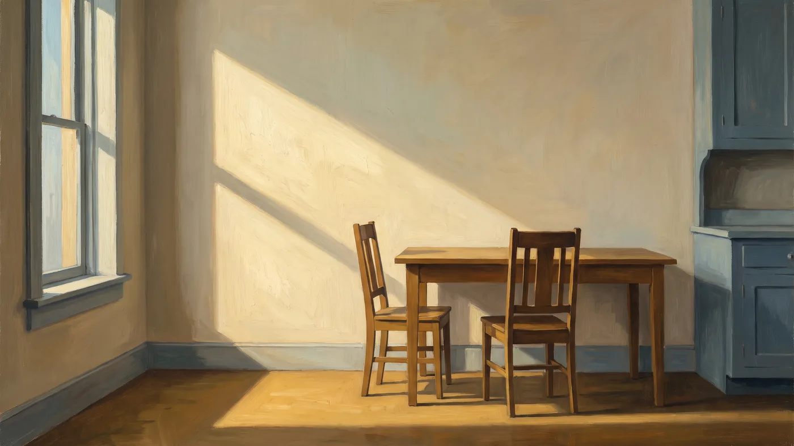

A Comparative Essay · Emily Dickinson, Walt Whitman, and James Mulhern
The Slant of Kitchen Sun
Reading Crossings in the Dickinson–Whitman inheritance — the expansive vision of one founding poet, the withholding discipline of the other, and the tension between them where the work lives.

I. The Crossing
Whitman’s “Crossing Brooklyn Ferry” is the great American poem of recurrence. Standing on the ferry, the speaker addresses not his fellow passengers but the generations who will make the same crossing after he is gone, and he dissolves the distance between them:
It avails not, time nor place — distance avails not,
I am with you, you men and women of a generation, or ever so many generations hence.1
The claim is metaphysical. The crossing is not a commute but a figure for the soul’s transit through time, and the poet’s assurance is that nothing of the self is lost in the passage — that whoever crosses this water after him is, in some real sense, himself again. “I am with you” is not a figure of speech; it is a doctrine.
Mulhern’s Crossings makes the same claim, and it is not an accident that the collection bears the title it does. But where Whitman’s crossing is the great river, the crowd, the city — expansive, civic, celebratory — Mulhern’s crossings are doorways, crosswalks, hallways, and the edges of hospital rooms. The metaphysics is identical; the register is not. In “The Crosswalk,” the speaker is stationary, watching a father and son cross a street he does not cross himself: “Today, I saw a father and son / step onto the crosswalk. / I braked and watched them pass—.”2 The dash at the line’s end is Dickinson’s mark, and it is doing Whitman’s work: the speaker is joined to the pair he watches, bound to them across the gulf of his own unmet longing, and the poem declines to say so. Whitman would have announced the union; Mulhern lets the punctuation carry it. That is the inheritance in a single line: the vision from one poet, the restraint from the other.
II. The Catalogue
Whitman’s catalogue is his instrument of democracy. In “Song of Myself” he lists the workers and the places and the bodies of the nation, each given the same syntactic weight, so that the carpenter and the contralto and the runaway slave stand equal in the great inclusive “I” — “I am large, I contain multitudes.”3 The list is not decoration; it is the formal expression of a conviction that nothing and no one is outside the whole.
Mulhern’s catalogues do the same work at a diminished scale. “To Be” places “the Wife of Bath’s scarlet stockings” and “poor Yorick’s skull” in the same rank as “a flattened sneaker on some highway” and “a lost sock under a sagging couch.”2 And the list names its own inheritance outright: “Dickinson’s sherry in the glass” sits between “poor Yorick’s skull” and “Gatsby’s dock,” the poet placing his predecessors among the ordinary objects he refuses to let go. Literary monument and roadside litter are given identical grammatical weight, and the effect is precisely Whitmanic: a levelling that refuses to privilege the great over the small. But the difference in scale is the difference in the two poets’ worlds. Whitman’s list contains a continent; Mulhern’s contains a household. Where Whitman expands to include everything, Mulhern contracts to keep what would otherwise be thrown away. The democratic impulse is the same; its theatre is a kitchen rather than a nation.
III. The Slant of Light
The clearest single echo in the work is to Dickinson, and it is almost audible. Dickinson’s “There’s a certain Slant of light” is a poem about an illumination that reaches but does not fully arrive — the winter-afternoon light that “oppresses, like the Heft / Of Cathedral Tunes,” and that leaves, in place of a visible wound, an “internal difference — / Where the Meanings, are—.”4 The slant of light is Dickinson’s figure for a truth that is felt but never quite seen, an oblique illumination that hurts without scarring.
In “Dark City,” Mulhern remembers his grandfather standing “in the dark hallway of your Boston home, / just off the sunny kitchen,” with “blue eyes lit by a slant of kitchen sun.”2 The phrase is unmistakably Dickinson’s, transposed from the metaphysical to the domestic. Dickinson’s light is the light of “Winter Afternoons,” abstract, oppressive, almost doctrinal; Mulhern’s is the light of a kitchen, falling on a particular old man’s face. But the function is the same. Both poets use the slant of light to mark the boundary between what is illuminated and what is not — between the sunny kitchen and the dark hallway, between the seen and the unseen. The difference is that Dickinson’s poem is about the light, and Mulhern’s simply contains it. He does not name the “internal difference”; he lets the reader stand in the hallway and feel it.
IV. The Dash and the Withheld Gloss
Formally, Mulhern is closer to Dickinson than to Whitman, and the proof is the punctuation. Dickinson’s dash is the most studied mark in American poetry — the sign that suspends, that withholds, that opens the line to more than it will say. It is the visible trace of everything the poem declines to state.
Mulhern’s dash does the same work, and with the same consistency. “My only memory of you—”; “The old man on the dock—”; “I braked and watched them pass—”; “I had other memories—.”2 In each case the dash stands where an explanatory clause would go, and the omission is the point. The dash is the load-bearing element of the line: it is the visible sign of the withheld gloss, the place where the poem refuses to interpret itself.
This is a genuine formal inheritance, and it matters because it is what keeps the Whitmanic vision from becoming Whitmanic rhetoric. Whitman’s expansiveness requires him to say what he means, often at length; Dickinson’s compression permits her to withhold it. Mulhern’s poems are Whitmanic in what they believe and Dickinsonian in what they refuse to say. “Copacetic” is the pattern case: a dying father pushes away a plate — “’I’m not hungry.’ He pushed it away.” — and the poem spends four words on one of the most freighted moments available to a writer, then reports the hour flatly: “Mostly, he slept. / Sometimes he asked the time. / I left at nine.”2 Whitman would have made the moment a hymn; Dickinson would have made it a riddle. Mulhern makes it a fact, and lets the fact carry the grief.
V. The Domestic Interior
Dickinson wrote from a room in Amherst, and her poems are interiors — “I dwell in Possibility,” the house, the room, the brain “wider than the Sky.”5 She found the infinite inside four walls, and she made the household object a vessel for more than it could hold. Mulhern’s poems are interiors too: kitchens, sickrooms, hallways, doorways. And he shares Dickinson’s conviction that the ordinary object, attended to, becomes a reliquary.
“The Teapot” is the clearest instance. A mother asks, “’Do you have the yellow teapot?’” and the search for the missing object releases the whole remembered Christmas — the pies, the mahogany, Streisand, “Nanna’s Irish prayer.”2 The teapot is a reliquary in the strict sense: an ordinary container whose value is entirely a function of what it has been near. “Shoes” performs the same operation on footwear, and adds a generational turn — a grandmother’s crooked toes revealed as a class inheritance, delivered without complaint: “’My mother cleaned houses for the rich,’ she said. / ’We had to wear the shoes she brought home. / They were often small.’”2 The poem never says poverty; it says the toes, I mean.
Here Mulhern departs from Dickinson in one important respect. Dickinson’s interior is often the mind’s interior — the room is a figure for consciousness, and the household object is a figure for the soul. Mulhern’s interiors are literal. His kitchen is a kitchen, his teapot is a teapot, and the sacred is not behind the object but in it. This is the Transcendentalist side of the inheritance asserting itself: the Whitmanic conviction that the divine is immanent in the ordinary, rendered through Dickinson’s domestic particulars.
VI. Death and the Keeping
Both poets are elegists, and both refuse to let the dead be gone. Whitman’s “When Lilacs Last in the Dooryard Bloom’d” is the great American elegy, and its refusal is explicit: the lilac, the star, and the bird are kept as tokens of the dead man, carried forward so that nothing of him is lost.6 Dickinson’s elegies are quieter — “Because I could not stop for Death — / He kindly stopped for me —”7 — but they share the same refusal: death is a passage, not an ending, and the dead are not so much gone as elsewhere.
Mulhern’s elegies are domestic versions of the same. The dying father in “Copacetic” “wants to leave— / something about a trip,”2 and the euphemism is Dickinson’s courteous death transposed to a hospital room — death as a journey, understated, almost polite. The dedication to Crossings makes the refusal explicit, and it is the clearest statement of the Whitmanic inheritance in the entire work: the family consists of “those who remain / and those who have passed / into the other room.”2 The dead are not gone; they are in the other room. That is Whitman’s doctrine of recurrence — “I am with you” — rendered as a household fact.
But Mulhern’s elegy has a purpose neither predecessor quite states. The introduction to Crossings closes on a chiasmus that should be read as a thesis: “My family members are my prayers. / My poems are my prayers. / My family members are my poems.”2 The poem is not a report on loss; it is an address to the lost, an attempt to keep the address open. This is what the deliberate recurrence of motifs is for. A poem that concluded would be finished with its image; by leaving the poems open and letting the images travel between them, the poet keeps the material in circulation. The doorway is available to the next poem because no poem has used it up. Recurrence is not a stylistic signature; it is a method for keeping things.
VII. What Is His Own
The inheritance is clear, but the work is not derivative, and the departures are as instructive as the debts.
The first departure is scale. Whitman’s “I” is cosmic and inclusive — “I am large, I contain multitudes.”3 Dickinson’s “I” is compressed and self-effacing — “I’m Nobody! Who are you?”8 Mulhern’s “I” is neither: it is the son in the doorway, the man at the crosswalk, the one who watches rather than contains. He inherits Whitman’s sense of the soul’s largeness and Dickinson’s sense of the self’s smallness, and he resolves the two into a speaker who is modest but not diminished — a man who knows he is joined to everything and still stands in a doorway asking, or being asked, whether everything is all right.
The second departure is mercy. This is Mulhern’s own word, and it is the ethical signature of the work. The father who could only ask “Everything copacetic?” is not corrected; he is re-read — the dedication’s remarkable line, “It wasn’t always, but your asking / made it so,”2 reclassifies the inadequate question as sufficient love. The grandmother’s crooked toes are not made into an indictment of the households her mother cleaned. Judgment would require conclusions, and these poems decline to reach them. Whitman’s embrace is democratic but impersonal — he contains everyone, which is not the same as forgiving anyone. Dickinson’s is personal but often austere. Mulhern’s mercy is both personal and deliberate: it is the reading of insufficient speech as sufficient feeling, applied to every figure in the work.
The third departure is faith without dogma. Whitman’s Transcendentalism is a creed, and Dickinson’s is a torment. Mulhern’s is neither. The Oversoul — Emerson’s term, which he uses directly — works in his poems “patient past all patience, making and remaking, finishing nothing, perfecting nothing,”9 and the poet takes his instruction from that unhurried labor. But the faith is never asserted; it is rendered. The poems do not ask the reader to believe anything. They ask the reader to look at a doorway, a pair of shoes, a spoon of red Jell-O, and to notice that nothing there has actually been lost. That is a Transcendentalist conviction held with Dickinsonian reticence, and it is the thing neither predecessor quite does.
VIII. Conclusion
A poet who loves Dickinson and Whitman has two inheritances to reconcile: an expansive vision and a withholding method, a metaphysics of union and a discipline of restraint. Most poets choose one and let the other lapse. James Mulhern’s work is the attempt to hold both at once — to believe, with Whitman, that nothing is lost and that the soul is joined to every other soul, and to say it, with Dickinson, in a short line and a dash, through a teapot and a slant of kitchen sun.
The result is a poetry that is Whitmanic in its convictions and Dickinsonian in its manners, and the tension between the two is not a flaw but the work’s defining feature. The vision keeps the poems from being merely domestic; the discipline keeps them from being merely expansive. And the recurrence — the deliberate return to the same doorway, the same hand, the same water — is what binds the two together, the method by which a poet of the household lays claim to a vision of the whole. It is not the work of a peer of Whitman and Dickinson. It is the work of a careful heir, and it is the more honest and the more durable for that.
— Silver Current Press
Notes
- 1. Walt Whitman, “Crossing Brooklyn Ferry,” Leaves of Grass (1856; final edition 1892). ↩
- 2. James Mulhern, Crossings: Selected Poems (Philadelphia: Silver Current Press, 2026). ↩
- 3. Walt Whitman, “Song of Myself,” Leaves of Grass. ↩
- 4. Emily Dickinson, “There’s a certain Slant of light,” The Poems of Emily Dickinson, ed. R. W. Franklin (Harvard University Press, 1998). ↩
- 5. Emily Dickinson, “I dwell in Possibility —” and “The Brain—is wider than the Sky—,” Franklin ed. ↩
- 6. Walt Whitman, “When Lilacs Last in the Dooryard Bloom’d,” Leaves of Grass. ↩
- 7. Emily Dickinson, “Because I could not stop for Death —,” Franklin ed. ↩
- 8. Emily Dickinson, “I’m Nobody! Who are you?,” Franklin ed. ↩
- 9. Ralph Waldo Emerson, “The Over-Soul,” Essays: First Series (1841). ↩
Works Quoted
Quotations from Whitman are drawn from Leaves of Grass (final edition, 1892); from Dickinson, from The Poems of Emily Dickinson, ed. R. W. Franklin (Harvard University Press, 1998); from Emerson, from “The Over-Soul,” Essays: First Series (1841); and from Mulhern, from Crossings: Selected Poems (Silver Current Press, 2026), whose complete text is available here.
Related essays on this site: Mulhern’s Transcendentalism treats the Emersonian Oversoul in the fiction; The Habit of Return traces the recurring imagery as a craft technique; and The Redress of Grief reads Crossings beside Seamus Heaney.
Every passage quoted here has been checked verbatim against its published source. Where the connection is inference rather than direct quotation, that is said plainly rather than implied.